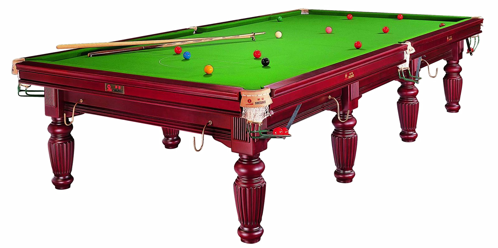

Üdvözöllek a Biliárd blog oldalán!
Ez az oldal a biliárd játék szabályaival foglalkozik.
A biliárd egy játékcsoport összefoglaló neve, melyben két ember vagy két csapat játszik egymás ellen. Golyókat kell egy keretezett asztalon, farudak segítségével lökni.
 Nike cipő vásárlás! - Vegyed, mert jó!